The general plan for GI tract starts from espohagus and ends in anal canal. It consists of four distinct
layers:
1.Mucosa:
The mucosa is the innermost layer of the GI tract and is responsible
for absorption and secretion. It is composed of three layers, including the epithelium, the lamina propria,
and the muscularis mucosae.
a.Epithelium: The epithelium is the innermost layer of the mucosa and is in direct contact with the lumen of
the GI tract. It is composed of various types of cells, including absorptive cells, goblet cells,
enteroendocrine cells, and stem cells. The absorptive cells absorb nutrients and water from the lumen, while
the goblet cells secrete mucus to lubricate and protect the GI tract. The enteroendocrine cells secrete
hormones that regulate various aspects of digestion, and the stem cells divide to replace damaged or lost
cells.
b.Lamina propria: The lamina propria is a layer of connective tissue that lies beneath the epithelium. It
contains blood vessels, lymphatic vessels, and immune cells, which are responsible for transporting
nutrients and providing immunity to the GI tract. It also contains nerve fibers that regulate various
aspects of digestion, such as peristalsis and secretion.
c.Muscularis mucosae: The muscularis mucosae is a thin layer of smooth muscle that lies beneath the lamina
propria.The msucularis mucosae consists of inner circular layer and outer longitudnal layer of smooth
muscle.
2.Submucosa:
The submucosa is a layer of connective tissue that contains blood
vessels, lymphatic vessels, and nerves. It also contains glands that secrete mucus and enzymes.
3.Muscularis externa:
The muscularis externa is the layer of smooth muscle that is
responsible for the movement of food through the GI tract. It is composed of two layers of muscle, the
circular layer and the longitudinal layer, that work together to create peristalsis.
4.Serosa or Adventitia:
The outermost layer of the GI tract is either a serosa or adventitia,
depending on the location and presence of mesothelium layer called the peritoneum(in abdominal cavity). The
serosa is a layer of connective tissue that is externally covered by peritoneum, while the adventitia is a
layer of connective tissue that is not covered by peritoneum.
Esophagus:
It is long muscular tube that extends from pharynx to stomach.
It is composed of following layers:
1.Mucosa:
It is the innermost layer to lumen.It includes three different layers:
a.Innermost epithelium:
Consists of non-keratinized startified squamous epithelium which protects against abrasive force of moving
peices and for fast food passage.
b. Lamina Propria:
Loose layers of Connective tissue.
Consists of blood vessel,nerve fibers for peristalsis and secretion and lymphatic vessal and immune cells
for immune response.
c. Muscularis Mucosae:
Consists of single layer of longitudnal muscle fibers.
Muscularis Mucosae is much more thicer in esophagus than other GI parts.
2.Submucosa:
The submucosa is a layer of connective tissue that contains blood vessels, lymphatic vessels, and nerves. It
also contains esopahgeal gland that secrete mucus to lubricate the esophagus.
3.Muscularis Externa:
The muscularis externa is the layer of smooth muscle that is responsible for the movement of food through
the esophagus. It is composed of two layers of muscle, the circular layer and the longitudinal layer, that
work together to create peristalsis.
4.Adventitia:
The outermost layer of the esophagus is the adventitia, which is a layer of
connective tissue that anchors the esophagus to surrounding structures. It does not have a serosa layer
because it is located outside the peritoneal cavity.
Stomach:
The stomach is a muscular organ located between the esophagus and the small intestine that is responsible
for the storage, mixing, and breakdown of food. It is composed of several histological layers, including:
1.Mucosa:
Epithelium: The epithelium is the most superficial layer of the mucosa and is composed of simple columnar
epithelial cells. These cells secrete mucus, bicarbonate, and enzymes that aid in the digestion of food.The
epithelium invaginate into the lamina propria to form the gastric gland.The gastric gland consists of
different cells such as:
Oxyntic cell to secrete HCL
Neck Mucous cell to secrete mucous
Chief cell to secrete pepsinogen
Enterochromaffin cell to secrete Histamine
G-cell to secrete gastrin
D-cell to secrerte Somatostatin
Lamina propria: The lamina propria is a layer of connective tissue that lies beneath the epithelium. It
contains blood vessels, lymphatic vessels, and immune cells that are responsible for transporting nutrients
and providing immunity to the stomach.
Muscularis mucosae: The muscularis mucosae is a thin layer of smooth muscle that lies beneath the
lamina propria. It consists of inner circular and outer longitudnal layer of msucle fiber.
2. Submucosa:
The submucosa is a layer of connective tissue that contains blood vessels, lymphatic vessels, and nerves. It
also contains glands that secrete mucus and enzymes that aid in the digestion of food.
3.Muscularis Externa:
It consists of three layers of muscle.The innermost oblique muscle, middle circular layer and outer
longitudnal layer of muscle.
4.Serosa:
The outermost layer of the stomach is the serosa, which is a layer of connective tissue that covers the
stomach and helps to anchor it to surrounding structures.
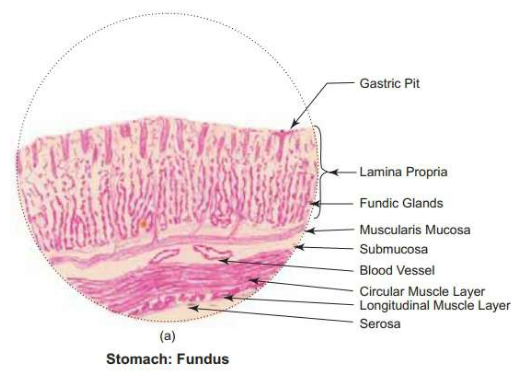
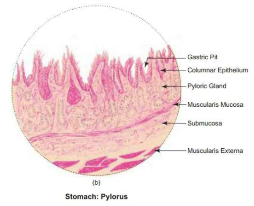
Small Intestine:
The small intestine is the longest part of the digestive tract, and it is responsible for the absorption of
nutrients from food. It is composed of several histological layers, including:
1.Mucosa:
The mucosa is the innermost layer of the small intestine and is responsible for secretion and absorption. It
is composed of three layers:
a.Epithelium: The epithelium is the most superficial layer of the mucosa and is composed of simple columnar
epithelial cells. These cells have microvilli, which increases the surface area for absorption. There are
also specialized cells in the epithelium, including goblet cells that secrete mucus and enteroendocrine
cells that secrete hormones.
b.Lamina propria: The lamina propria is a layer of connective tissue that lies beneath the epithelium. It
contains blood vessels, lymphatic vessels, and immune cells that are responsible for transporting nutrients
and providing immunity to the small intestine.
c.Muscularis mucosae: The muscularis mucosae is a thin layer of smooth muscle that lies beneath the lamina
propria. It is responsible for moving the folds and villi of the mucosa, which increases the surface area
for absorption and secretion.
2.Submucosa:
The submucosa is a layer of connective tissue that contains blood vessels, lymphatic
vessels, and nerves. It also contains glands that secrete mucus and enzymes that aid in the digestion of
food.
3.Muscularis externa:
The muscularis externa is the layer of smooth muscle that is responsible for
the movement of food through the small intestine. It is composed of two layers:
Inner circular layer: The innermost layer of the muscularis externa is the circular layer, which helps to
move food along the digestive tract.
Outer longitudinal layer: The outermost layer of the muscularis externa is the longitudinal layer, which
helps to shorten and lengthen the small intestine to move food through the digestive tract.
4.Serosa:
The outermost layer of the small intestine is the serosa, which is a layer of connective
tissue that covers the small intestine and helps to anchor it to surrounding structures.
[The small intestine have microvilli which is the cytoplasmic extension of clumnar cell as well as villi
which is is the extension of Lamina Propria but , the large intestine lacks the microvilli and contains only
villi.]
Large Intestine:
The large intestine, also known as the colon, is the final part of the digestive tract. It is responsible
for absorbing water and electrolytes from indigestible food matter and eliminating waste products from the
body.It consists of following layers:
1.Mucosa:
The mucosa is the innermost layer of the large intestine and is responsible for secretion
and absorption. It is composed of three layers:
a.Epithelium: The epithelium is the most superficial layer of the mucosa and is composed of simple
columnar epithelial cells and large number of goblet cells. These cells secrete mucus that lubricates the
intestinal wall and aids in the passage of fecal matter.
b.Lamina propria: The lamina propria is a layer of connective tissue that lies beneath the epithelium.
It contains blood vessels, lymphatic vessels, and immune cells that are responsible for transporting
nutrients and providing immunity to the large intestine.
c.Muscularis mucosae: The muscularis mucosae is a thin layer of smooth muscle that lies beneath the
lamina propria. It is responsible for moving the folds and villi of the mucosa, which increases the surface
area for absorption and secretion.
2.Submucosa:
The submucosa is a layer of connective tissue that contains blood vessels, lymphatic
vessels, and nerves. It also contains glands that secrete mucus and enzymes that aid in the digestion of
food.
3.Muscularis externa:
The muscularis externa is the layer of smooth muscle that is responsible for
the movement of fecal matter through the large intestine. It is composed of two layers:
Inner circular layer: The innermost layer of the muscularis externa is the circular layer, which helps to
move fecal matter along the digestive tract.
Outer longitudinal layer: The outermost layer of the muscularis externa is the longitudinal layer, which
helps to shorten and lengthen the large intestine to move fecal matter through the digestive tract.
4.Serosa:
The outermost layer of the large intestine is the serosa, which is a layer of connective
tissue that covers the large intestine and helps to anchor it to surrounding structures.
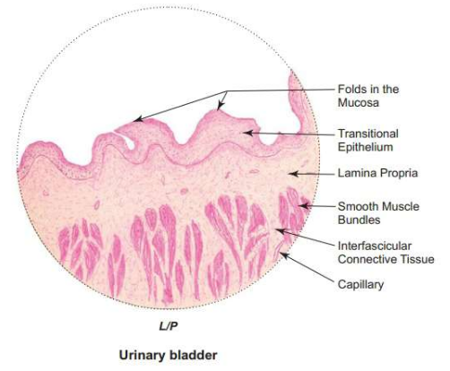
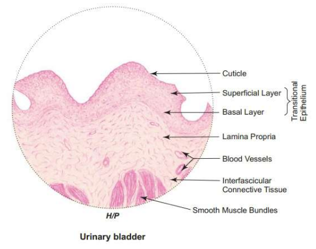
Accessory Glands
1.Liver
The liver is a large, vital organ located in the upper right side of the abdomen, just below the diaphragm.
It plays a crucial role in a variety of metabolic processes, including the production of bile, which is
important for the digestion and absorption of fats.
Histological Features:
It consists of two layers:
Outer Capsule: The liver is covered by a thin connective tissue capsule that surrounds and protects the
organ.
Parenchyma: The parenchyma is the functional tissue of the liver and is composed of hepatocytes, which
are the main functional cells of the liver. The hepatocytes are arranged in lobules, which are the basic
functional units of the liver.
Important parts of liver histology:
Hepatic lobule:
It is a hexagonal structure which is composed of hepatocyte cell, central vein , portal vein,hepatic artery
and bile duct.The central vein , portal vein,hepatic artery and bile duct forms the portal triad.
The hepatic arerty has narrow lumen, is circular in shape and small in shape.
The bile duct is similar to hepatic artery excpet it has lining of cuboidal epithelium.
The portal vein is larger and has wider lumen.
The central vein is lined my single layer of endotheial cell and drain vlood comong from portal triad via
sinusoids.
Parenchyma:
It is present below capsule.
It gives pink cytoplasm in H&E staining.
It is the main functional tissue of liver.
Parenchyma consists of Hepatic Lobule.
Sinusoids:
The liver sinusoids are thin-walled blood vessels that run between the hepatocytes, the main functional
cells of the liver. The sinusoids are lined with specialized endothelial cells called Kupffer cells, which
are part of the liver's immune system and help to remove bacteria, foreign particles, and damaged cells from
the blood.
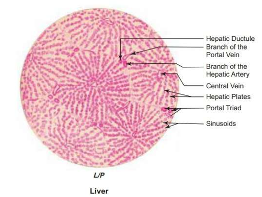
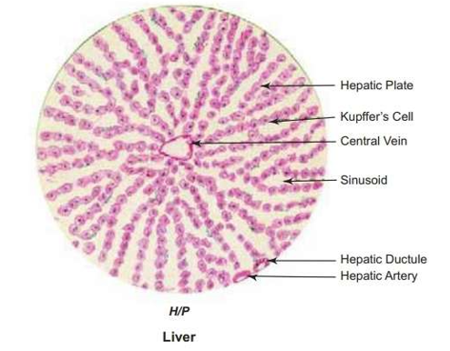
2.Pancreas:
The pancreas is an accessory gland of the digestive system that plays a crucial role in digestion and
metabolism. It is located behind the stomach and is divided into several regions, including the head, body,
and tail.
Histological Features:
The pancreas is composed of two main types of tissue: exocrine tissue and endocrine tissue.
a.The exocrine tissue is responsible for producing and secreting digestive enzymes into the small intestine
through a duct system. It consists of Serous Acini (darkly stained under microscope).
b.The endocrine tissue of the pancreas is responsible for producing and secreting hormones, including
insulin and glucagon, which regulate blood sugar levels. The cells that produce these hormones are called
islet cells(Lightly stained under microscope, present in between serous acini), and they are located in
clusters throughout the pancreas.
3.Gall Bladder:
The gallbladder is a small pear-shaped organ located beneath the liver. Its main function is to store and
concentrate bile, a digestive fluid produced by the liver.
Histological Features:
It consists of three layers:
a.Mucosa: The innermost layer of the gallbladder wall is the mucosa, which is composed of a layer of
epithelial cells that form folds called rugae. The epithelial cells are responsible for absorbing and
secreting fluids.
b.Lamina propria: The mucosa is supported by a thin layer of connective tissue called the lamina propria.
[There is no muscularis mucosae to differentiate between mucosa and sub-mucosa].
c.Muscularis: The third layer is the muscularis, which consists of smooth muscle fibers that contract and
relax to help expel bile from the gallbladder.
d.Adventitia: The outermost layer is the adventitia, which is a layer of connective tissue that anchors the
gallbladder to surrounding organs.
Urinary System
The urinary system, also known as the renal system, is responsible for removing waste products and excess
water from the body. It consists of the kidneys, ureters, bladder, and urethra.
It consists of following parts:
1.Kidney:
The kidneys are two bean-shaped organs located on either side of the spine, just below the ribcage. Their
main function is to filter blood and remove waste products, excess water, and electrolytes from the body.
They also produce hormones that regulate blood pressure, stimulate red blood cell production, and maintain
electrolyte balance.
Histological Features:
Renal Capsule: The liver is surrounded by a thin layer of connective tissue called the capsule. It helps to
protect the kidney and maintain its shape.
It consists of two layers: outer cortex and inner medulla.
a.Cortex:
The cortex is the outer layer of the kidney, and it contains many of the kidney's functional units called
nephrons.
It consists of :
i. Renal Corpuscles: The renal corpuscle is a structure in the kidney that is responsible for filtering
blood and forming urine. It is composed of two main parts: the glomerulus and the Bowman's capsule.
Glomerulus :
Network of fenestrated(having pores/holes) capillaries surrounded by Bowman's capsule.
Bowman's Capsule:
The Bowman's capsule is a cup-like structure that surrounds the glomerulus and collects the filtered blood
from the glomerular capillaries.
ii.Renal tubule:
It is tubular structure which includes the PCT,Loop of Henle's and DCT
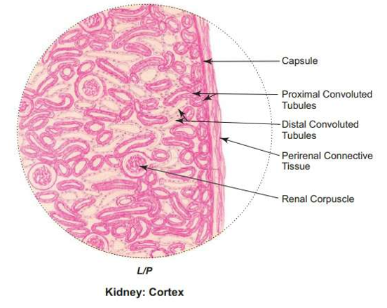
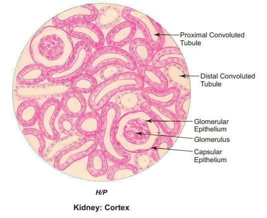
Histological feature of Renal Tubule:
PCT: In microscope , PCT appear circular , pink stained and lined by epithelial cell.
DCT: Simlar to PCT, maybe larger in size and have clear cytoplasm.
Ascending Lopp of Henle's: Thicker,circular and jave pinkish staining.
Desnceding Loop: Thinner, wider , larger and have clear cytoplasm.
b.Medulla :
Consists of collecting duct. Collecting Duct appears circular ,with pink stianing and narrow lumen.
2.Ureter:
Histological Features:
Mucosa: The mucosa is the innermost layer of the ureter, and it is composed of transitional epithelium, a
specialized type of epithelial tissue that can stretch and contract in response to changes in pressure. The
mucosa helps to protect the ureter from damage caused by urine.
Muscularis: Below the mucosa, pinkish staining . Consits of two layer , inner longitudnal and outer circular
[oppostie that of GI tract].
Adventitia: The adventitia is the outermost layer of the ureter, and it is composed of connective tissue and
blood vessels. The adventitia helps to anchor the ureter in place and protect it from damage caused by
nearby structures.
3.Urinary Bladder:
It is similar to ureter as it also has three distinct layers:
a.Mucosa:
The mucosa is the innermost layer of the urinary bladder, and it is composed of transitional epithelium, a
specialized type of epithelial tissue that can stretch and contract in response to changes in volume. The
mucosa also contains mucus-secreting glands, which help to protect the bladder from damage caused by
urine.Below the epithelium is Lamina propria.
b.Muscularis:
The muscularis contains three layers of muscle fibers: an inner longitudinal layer, a middle circular layer,
and an outer longitudinal layer.
c.Adventitia: The adventitia is the outermost layer of the urinary bladder, and it is composed of connective
tissue and blood vessels.
Cardiovascular system
The cardiovascular system is composed of the heart, blood vessels, and blood.
Histology of different types of blood vessels:
1.Muscular arterty:
Muscular arteries, also known as distributing arteries, are a type of artery that are located between the
elastic arteries and the arterioles. They are responsible for distributing blood to various organs and
tissues in the body.for e.g [brachial artery,femoral artery,renal artery]
The histology of muscular arteries is characterized by three distinct layers, known as tunics. These
include:
Tunica Intima:
The tunica intima is the innermost layer of the muscular artery and is composed of a layer of endothelial
cells, which are responsible for maintaining a smooth surface for blood flow. The endothelial cells are
supported by a layer of connective tissue, known as the subendothelial layer.
Tunica Media:
The tunica media is the middle layer of the muscular artery and is composed of multiple layers of smooth
muscle cells. The smooth muscle cells are responsible for regulating the diameter of the blood vessel and
are innervated by sympathetic nerve fibers. The amount of smooth muscle in the tunica media varies depending
on the size of the artery and its function.
Tunica Adventitia:
The tunica adventitia is the outermost layer of the muscular artery and is composed of connective tissue,
which provides structural support to the vessel. The tunica adventitia also contains vasa vasorum, which are
small blood vessels that supply oxygen and nutrients to the outer layers of the artery.
How to identify?
1.The endothelial lining can't be seen under low magnification because it is a single layer of simple
squamou s epithelium.
2.The tunica intima has a wavy pattern due to internal elastic lamina and has a dark purplish stain.
3.The tunica media lloks smooth without any wavy structure.
2.Elastic Artery:
These are the largest artery in the body. foe e.g: Aorta
Consists of three layers:
1.Tunica Intima:
The tunica intima is the innermost layer of the elastic artery and is composed of a single layer of
endothelial cells.
2.Tunica Media:
The tunica media is the thickest layer of the elastic artery and is composed of multiple layers of elastic
fibers and smooth muscle cells.T.M has wavy nature with dark purplish stain whereas T.I is smooth with
pinkish stain due to lack of elastic membrane..
3.Tunica Adventitia:
The tunica adventitia is the outermost layer of the elastic artery and is composed of connective tissue,
which provides structural support to the vessel.
How to identidy?
a.Large lumen:
Elastic arteries have a large lumen compared to muscular arteries, and this can be identified under the
microscope as a clear, open space in the center of the vessel.
b.Thick walls:
The walls of elastic arteries are thicker than those of muscular arteries, and this can be identified
microscopically as a thicker tunica media with more elastic fibers.
c.Elastic fibers:
Elastic arteries have a large amount of elastic fibers in their tunica media, which can be identified under
the microscope as wavy, black-staining fibers that form a mesh-like network.
d.Smooth muscle cells:
Elastic arteries also have smooth muscle cells in their tunica media, which can be identified
microscopically as elongated, spindle-shaped cells with elongated nuclei.
e.No external elastic lamina:
Elastic arteries lack an external elastic lamina, which is present in muscular arteries. This can be
identified microscopically by the absence of a distinct layer between the tunica media and tunica
adventitia.
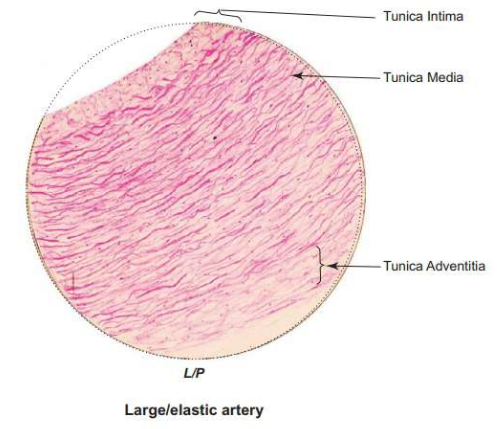
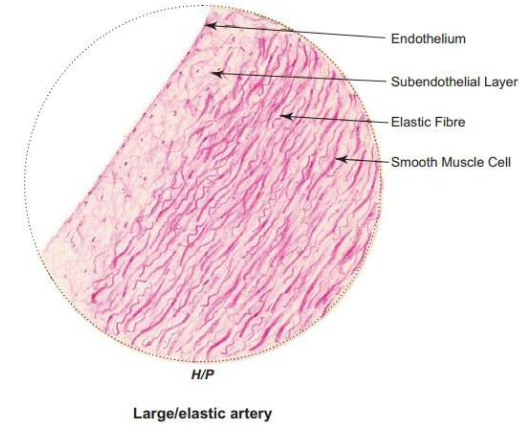
Large/Big Vein:
The big vein carry deoxygenated blood from lower and upper part of the body. for e.g Superior
Venacava[SVC],IVC,pulmocary vein
Layers:
1.Tunica intima:
The tunica intima is the innermost layer of the big vein and is composed of a single layer of endothelial
cells, which form a smooth surface for blood flow. The endothelial cells are supported by a layer of
connective tissue, known as the subendothelial layer.
2.Tunica media:
The tunica media is the middle layer of the big vein and is composed of smooth muscle cells and elastic
fibers. The amount of smooth muscle in the tunica media is less than that in muscular arteries, as veins are
not responsible for maintaining blood pressure.
3.Tunica adventitia:
The tunica adventitia is the outermost layer of the big vein and is composed of connective tissue, which
provides structural support to the vessel. The tunica adventitia also contains vasa vasorum, which are small
blood vessels that supply oxygen and nutrients to the outer layers of the vein.
How to identify:
1.Large lumen:
Big veins have a large lumen compared to arteries, and this can be identified under the microscope as a
clear, open space in the center of the vessel.
2.Thin walls:
The walls of big veins are thinner than those of muscular arteries, and this can be identified
microscopically as a thinner tunica media and adventitia.
3.Irregular shape:
Big veins have a more irregular shape than muscular arteries, which have a more circular shape. This
irregularity can be identified microscopically by observing the uneven edges of the vessel.
4.Presence of valves:
Big veins have valves to prevent backflow of blood. These can be identified under the microscope as small
flaps of tissue protruding into the lumen of the vessel.
5.Presence of vasa vasorum:
Big veins have vasa vasorum in their tunica adventitia, which can be identified microscopically as small
blood vessels in the outermost layer of the vessel.
Respiratory system.
The respiratory system is a complex system of organs and tissues that is responsible for the process of
breathing. Its primary function is to supply oxygen to the body and remove carbon dioxide, a waste product
generated by cells during metabolism.
Respiratory system is divided into two parts:
The upper respiratory tract includes nasal cavity,pharynx and larynx and low respiratory tract include
trachea,bronchi,bronchioles and alveoli.
The URT is lined by mucous membrane that contains specialized cells called goblet cells which produce mucous
and ciliated cell which help to trap dust particles.
The LRT is lined with similar mucous membrane but it also consists of specialised cells to perform specific
functions.
for e.g: Trachea and bronchi have goblet cells,ciliated cells and clara cells(produce protein to detoxify
harmful substances).
Trachea
1.Mucosa: The innermost layer of the trachea, which is lined by a mucous membrane consisting of
pseudostratified ciliated columnar epithelium, goblet cells, and mucous glands. This layer helps to trap and
remove foreign particles and debris from the respiratory system.
2.Submucosa: The layer beneath the mucosa, which contains connective tissue, blood vessels, and nerves. It
also contains seromucous glands, which secrete a mixture of mucus and serous fluid that helps to moisten and
protect the airway.
3.Cartilage: The tracheal wall is reinforced by a series of C-shaped rings of hyaline cartilage, which
provide structural support and prevent collapse of the airway during inspiration. The open ends of the
C-shaped cartilage rings face posteriorly and are bridged by a band of smooth muscle called the trachealis
muscle.
4.Adventitia: The outermost layer of the trachea, which is composed of loose connective tissue and contains
blood vessels, lymphatics, and nerves. The adventitia helps to anchor the trachea in place and allows it to
move slightly during breathing.
How to identify?
a.Look for a thick, circular or semicircular structure.
b.Identify the pseudostratified ciliated columnar epithelium on the surface of the trachea.
c.Observe the cilia projecting from the epithelium.
d.Look for goblet cells that appear as round or oval-shaped cells containing a clear, pale-staining mucin.
e.Beneath the epithelium, identify the layer of connective tissue called the lamina propria.
f.Observe the scattered lymphoid tissue and mucous glands within the lamina propria.
[g.The submucosa consists of mucous and serous glands.The serous gland is circular in shape and has darkly
stained cytoplasm with columnar cell in the periphery whereas the mucous gland has white,clear cytoplasm.]
.Identify the tracheal cartilage as a series of C-shaped rings surrounding the tracheal wall.
h.Observe the cartilage rings as smooth, pale-staining semicircles that partially encircle the tracheal
lumen.
i.Finally, look for the adventitia, which is the outermost layer of the trachea composed of loose connective
tissue containing blood vessels, nerves, and lymphatics.
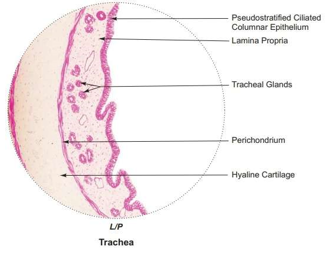
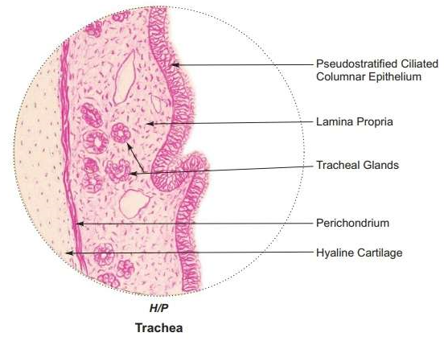
Primary Bronchus
The primary bronchi are the first branches of the trachea that enter each lung. They are lined with
respiratory epithelium, which undergoes changes as the bronchi branch into smaller airways. Here are the
histological features of primary bronchi:
1.Respiratory epithelium: The primary bronchi are lined with respiratory epithelium, which is a
pseudostratified columnar epithelium that contains ciliated cells, goblet cells, and basal cells. The
ciliated cells help move mucus and debris towards the pharynx, while goblet cells secrete mucus that helps
to trap and remove foreign particles.
2.Lamina propria: The layer of connective tissue that lies beneath the respiratory epithelium is called
the lamina propria. It contains a network of blood vessels, nerves, and lymphatic vessels.
Submucosa: Beneath the lamina propria lies a layer of loose connective tissue called the submucosa. It
contains a variable number of seromucous glands, which secrete a mixture of mucus and serous fluid to
moisten and protect the airways.
Cartilage: The primary bronchi have incomplete rings of hyaline cartilage in their walls, which provide
structural support and prevent collapse of the airway during inspiration. The cartilage rings are replaced
by irregular plates of cartilage as the bronchi branch into smaller airways.
Smooth muscle: The walls of the primary bronchi also contain smooth muscle, which contracts and relaxes to
regulate airflow through the airways.
Lung/Alveoli
Histological feature:
pulmonary alveoli gives hexagonal/honey-comb appearance
there is simple squamous epithium lining the alveoli
presence of bronhi,bronchioles and respiratory bronhioles.